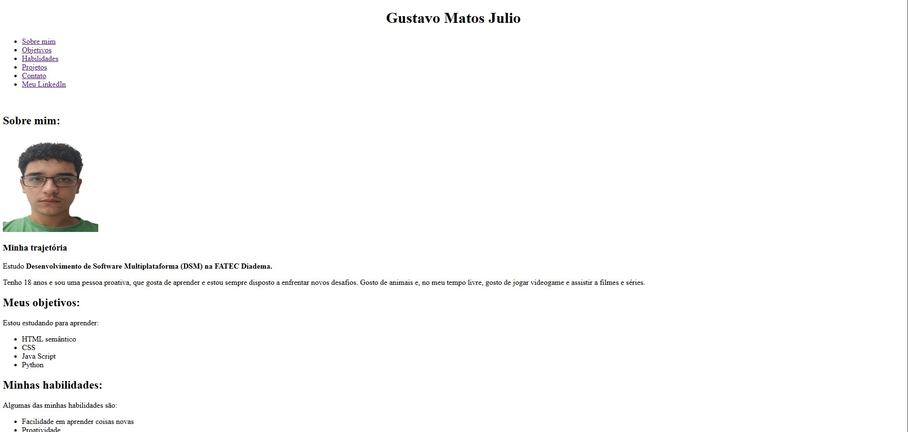

Minha trajetória
Estudo Desenvolvimento de Software Multiplataforma (DSM) na FATEC Diadema.
Tenho 18 anos e sou uma pessoa proativa, que gosta de aprender e estou sempre disposto a enfrentar novos desafios. Gosto de animais e, no meu tempo livre, gosto de jogar videogame e assistir a filmes e séries.
Estudo Desenvolvimento de Software Multiplataforma (DSM) na FATEC Diadema.
Estou estudando para aprender:
Algumas das minhas habilidades são:
Nivel de conhecimento:
| Habilidade | Nivel | Observação |
|---|---|---|
| HTML semântico | Básico | Em estudo atualmente |
| CSS | Iniciante | Não iniciado |
| JavaScript | Iniciante | Não iniciado |
| Python | Básico | Em estudo atualmente |
Alguns de meus projetos desenvolvidos:
Este próprio site, desenvolvido com HTML semântico como primeiro passo antes da estilização com CSS.

Whatsapp: 11 98070-3696
Email: gus200008@gmail.com
LinkedIn: Acesse meu perfil profissional